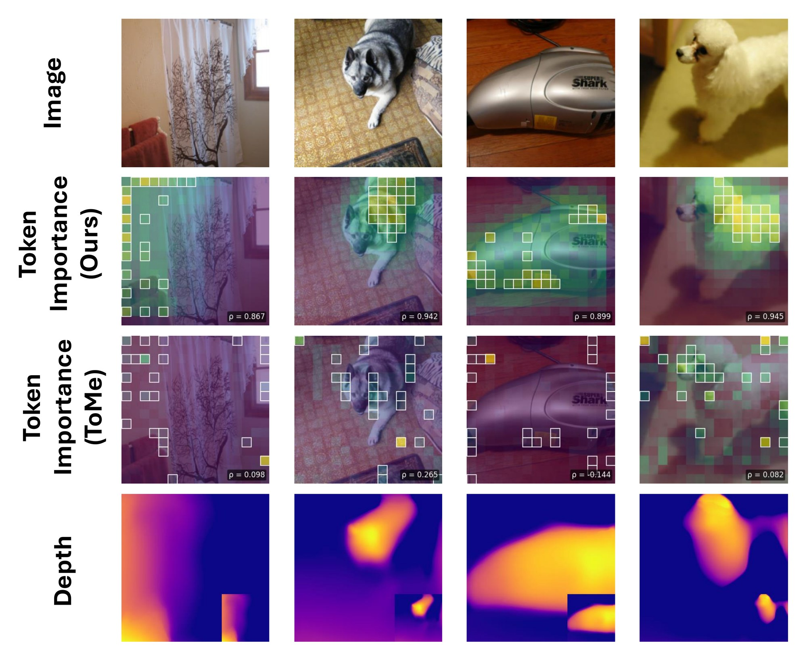

Step 1 · Diagnose
κcap(r) measures how much of the decoder's sensitivity a rank-r metric can capture. It takes about 140 Jacobian-vector products and no training.
Step 2 · Learn
The Spectral Pullback Network learns the metric from randomized power iteration. A 310K-parameter head distills it into one score per token.
Step 3 · Use
The scores drive token merging and pruning in a frozen ViT. A first-order bound relates the error to the importance of the removed tokens.
Methods that operate on ViT features compare them with Euclidean distance or cosine similarity. Both weight every feature direction equally. Task decoders do not.
The geometry a task induces is the pullback metric g = J⊤J, built from the Jacobian of the decoder's output with respect to the features. Storing g is infeasible at ViT scale, and for dense outputs such as depth maps even forming J is impractical. Whether a low-rank version of g can be learned depends on the model–decoder pair, and the matrix-free diagnostic κcap(r) measures it.
For tractable pairs, the Spectral Pullback Network learns a low-rank metric from randomized power iteration, and we distill it into a 310K-parameter importance head that reads only the features. When the spectrum is too spread out, a VAE bottleneck restores tractability. Across DPT, DINOv2, CLIP and VGGT, the diagnostic predicts which architecture is viable. The head reaches Spearman ρ = 0.998 on DINOv2 CLS, and geometric token pruning cuts the additional depth error of ToMe-based selection by 25% at prune ratio 0.5. The ViT stays frozen throughout.
The diagnostic sorts a backbone–decoder pair into one of four regimes. The regime determines which architecture to train.
| Backbone / decoder | κcap(20) | CV | reff | Regime |
|---|---|---|---|---|
| DA V2 depth (DPT), L02 | 95.6% | 0.026 | 34 | Low rank, delocalized. The metric fits, but its directions are spread over all tokens. Learning it needs cross-token attention. |
| DA V2 depth (DPT), L10 | 96.6% | 0.026 | 20 | |
| DINOv2 CLS, L10 | 33.4% | 4.06 | 261 | Marginal κ, high CV. No faithful low-rank metric, yet a few tokens carry the sensitivity, so per-token scoring works. |
| VGGT camera, L16 | ≈ 100% | N/A | 9 | Rank-bounded. Nine outputs, so the metric is low rank by construction. |
| VGGT pointcloud, L08 | 96.6% | 0.59 | 212 | Rich spectrum. Beyond any practical rank budget. A VAE bottleneck brings the effective rank down to 30–53. |
| VGGT depth, L16 | 76.2% | 0.63 | 282 |
r = 20, m = 100 probes, q = 2, over 50 images. CV measures how unevenly the task-sensitive directions spread across tokens.
Lower is better. On DINOv2 CLS, importance-guided merging stays closest to the unpruned embedding at every ratio, by more than an order of magnitude at low ratios.
On dense depth the ordering changes with the ratio. Importance beats ToMe scoring from η = 0.20 upward and is best of the three from η = 0.30. ToMe scoring wins at the lowest ratios.
| Method | η = 0.05 | 0.10 | 0.15 | 0.20 | 0.30 | 0.40 | 0.50 |
|---|---|---|---|---|---|---|---|
| CLS cosine-distance degradation (× 100) · DINOv2-B/14 | |||||||
| Random | 0.17 | 0.36 | 0.60 | 0.86 | 1.49 | 2.31 | 3.44 |
| ToMe score | 0.67 | 0.78 | 0.95 | 1.12 | 1.75 | 2.56 | 3.82 |
| Importance (ours) | 0.001 | 0.007 | 0.024 | 0.060 | 0.25 | 0.80 | 2.09 |
| DPT additional SILog (× 100) · Depth-Anything V2, single stage | |||||||
| Random | 4.59 | 3.70 | 3.31 | 3.19 | 3.16 | 3.20 | 3.29 |
| ToMe score | 4.29 | 3.66 | 3.51 | 3.50 | 3.52 | 3.67 | 4.09 |
| Importance (ours) | 4.88 | 4.86 | 3.85 | 3.28 | 3.02 | 3.01 | 3.08 |
ImageNet-val at 224, mean over 3 seeds, best per column in bold. On NYU-Depth-V2, a 2-stage schedule beats ToMe scoring at every ratio and resolution by 25–35%.
The head concentrates on depth discontinuities, such as object outlines and foreground–background transitions. ToMe's cosine scores highlight tokens that differ from their neighbours.

Rows: input, importance head, ToMe cosine scores, and the depth predicted by the frozen decoder. Each map is annotated with its Spearman ρ against the Jacobian-derived target. These four images are examples, and the held-out average on this task is about 0.20.
@article{bond2026taskinduced,
author = {Bond, Andrew and {\"O}zlu, Ege Erdem and {\c{C}}imen, Tuna and
Melanlioglu, Ilkin Umut and Birdal, Tolga and Erdem, Erkut and Erdem, Aykut},
title = {Task-Induced Riemannian Metrics for Vision Transformer Feature Spaces},
year = {2026},
}